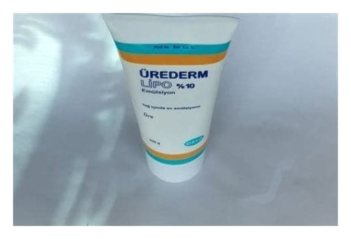

Ürederm Lipo %10 Emülsiyon (200 g)

Ne için kullanılır
KT · Bölüm 1Bu KULLANMA TALİMATINI dikkatlice okuyunuz, çünkü sizin için önemli bilgiler içermektedir. Bu ilaç sizin reçetesiz olarak temin edip bir doktor yardımı almadan eczacınızın tavsiyesi ile hafif bir hastalığı tedavi etmeniz içindir. Buna karşın, yine de ÜREDERM LİPO’dan en iyi sonuçları alabilmeniz için dikkatli kullanmanız gerekmektedir.
• Bu kullanma talimatını saklayınız. Daha sonra tekrar okumaya ihtiyaç duyabilirsiniz. • Eğer ilave sorularınız olursa, lütfen doktorunuza veya eczacınıza danışınız. • Bu ilaç kişisel olarak sizin için reçete edilmiştir, başkalarına vermeyiniz. • Bu ilacın kullanımı sırasında, doktora veya hastaneye gittiğinizde doktorunuza bu ilacı kullandığınızı söyleyiniz. • Bu talimatta yazanlara aynen uyunuz. İlaç hakkında size önerilen dozun dışında yüksek veya düşük doz kullanmayınız.
• ÜREDERM LİPO, deri üzerine sürülerek kullanılan bir üründür. Yumuşatıcılar ve Koruyucular olarak adlandırılan bir ilaç grubuna dahildir. Etkin madde olarak 100 gramında 10 g üre içerir. • ÜREDERM LİPO, ağzı polipropilen kapakla kapatılmış, 200 g beyaz renkli emülsiyon içeren polietilen tüpte kullanıma sunulmaktadır. • ÜREDERM LİPO; iktiyozis (balık pulu görünümündeki kuru cilt hastalığı), kseroderma/kserozis (kuru cilt), atopik egzama (bazı alerjenlere karşı doğuştan veya sonradan aşırı duyarlılık sonucu gelişen, sulanma gösteren kırmızımsı renkte lezyonlarla belirgin kronik egzama), asteatotik egzama (yaşlanma, kuru hava, suyla aşırı temas, deterjan ve doğru beslenmeme gibi faktörlerden kaynaklanan derinin kuruması ile kendini gösteren egzama) gibi kronikleşmiş (süregelen, uzun süren) kuru cilt durumlarının eşlik ettiği deri hastalıklarının tedavisinde kullanılır. • ÜREDERM LİPO; aynı zamanda, topikal kortikosteroit (iltihap giderici, antialerjik ve kaşıntı giderici özelliklere sahip bir ilaç grubu) tedavisinde, aralıklı tedavi yönteminde kortikosteroitlerle birlikte kullanılır. • Derinin en üst tabakasındaki (stratum korneum) suyun azalması sonucunda deri kurur. Bu tabaka kuruduğunda, pullanma, çatlama ve kaşıntı görülebilir. ÜREDERM LİPO’nun içerdiği “üre” stratum korneum’da doğal olarak bulunan bir maddedir. Cildin nemlenmesini sağlar. Su, stratum korneum’da ince bir tabaka halinde, cildin doğal yağı olan sebum ile de tutulmaktadır. Böylece; cilt yüzeyinden suyun buharlaşması yavaşlatılarak iritasyon (tahriş) azaltılır, cildin elastikiyeti sağlanır ve görünümü iyileştirilir.